Articoli per imparare l'italiano
Grammatica, cultura, modi di dire e consigli pratici — 220 articoli per accompagnarti nel tuo percorso, prima o dopo ogni lezione.
Leer overal Italiaans: online lessen en fysieke lessen in Amsterdam
Waarom kiezen voor privélessen Italiaans in Amsterdam? Italiaans leren met een gekwalificeerde docent biedt veel voordelen ten opzichte van…
2 ottobre 2025
Impara l’italiano ovunque: lezioni online e in presenza ad Amsterdam
Perché scegliere le lezioni private di italiano ad Amsterdam? Studiare italiano con un insegnante qualificato offre numerosi vantaggi rispetto ai…
2 ottobre 2025Cosa mangeremo nel 2025?
🥑 How food habits in Italy are changing: plant-based, local, creative. 🎯 Obiettivi didattici Comprendere un testo informativo su cibo e abitudini.…
25 maggio 2025
Cosa è Ferragosto?
La festa di Ferragosto ha radici nell'Antica Roma, celebra l'Assunzione di Maria ed è oggi sinonimo di vacanze. Ferragosto è una delle festività più…
13 maggio 2025Vivere meglio nel 2025
💡 How Italians are redefining lifestyle with simplicity, health and awareness. 🎯 Obiettivi didattici Comprendere un testo su nuove tendenze della…
3 aprile 2025I Gesti Famosi degli Italiani
Discover why Italians use gestures when they speak and how these gestures enrich their communication. This article is perfect for those who want to…
23 marzo 2025
Sindaci piccoli, idee grandi
🗳️ Mayors of small towns bring big change with local actions and vision. 🎯 Obiettivi didattici Comprendere un testo narrativo e informativo sul…
4 marzo 2025
Essere al verde
Cosa significa "essere al verde"? Quando si è "al verde" significa trovarsi in una situazione finanziaria estremamente precaria, senza avere nemmeno…
28 febbraio 2025
Quando l’accoglienza salva i paesi
🏘️ In southern Italy, migrants help revive villages at risk of depopulation. 🎯 Obiettivi didattici Riflettere sul ruolo sociale dell’immigrazione e…
3 febbraio 2025Roma: Magia e Storia tra i Sette Colli
Roma, la Città Eterna, con la sua storia, arte e natura, offre un'esperienza indimenticabile e unica. Roma, la Città Eterna, è un luogo unico che…
16 gennaio 2025Il Granchio Blu
Discover the threat of the invasive blue crab in Italy. Learn about its origins, impact on the ecosystem, and measures taken to combat this…
9 gennaio 2025
Italiaans leren in Amsterdam: privélessen, groepslessen en online cursussen
Veel mensen in Amsterdam en Nederland willen Italiaans leren. Niet zomaar voor de vakantie, maar echt om mee te praten, films te begrijpen, vrienden…
6 gennaio 2025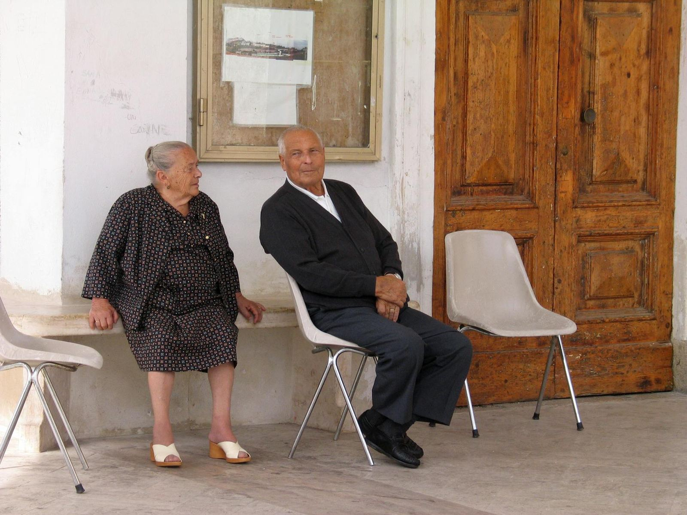
Vivere bene in pensione: le migliori città italiane
🇮🇹 Where to retire in Italy: lifestyle, costs and well-being in different cities. 🎯 Obiettivi didattici Comprendere un testo descrittivo e…
25 novembre 2024Subiaco, Capitale del Libro 2025
📘 The town of Subiaco has been named Italy's Book Capital 2025: a symbol of culture and memory. 🎯 Obiettivi didattici Comprendere un testo…
25 ottobre 2024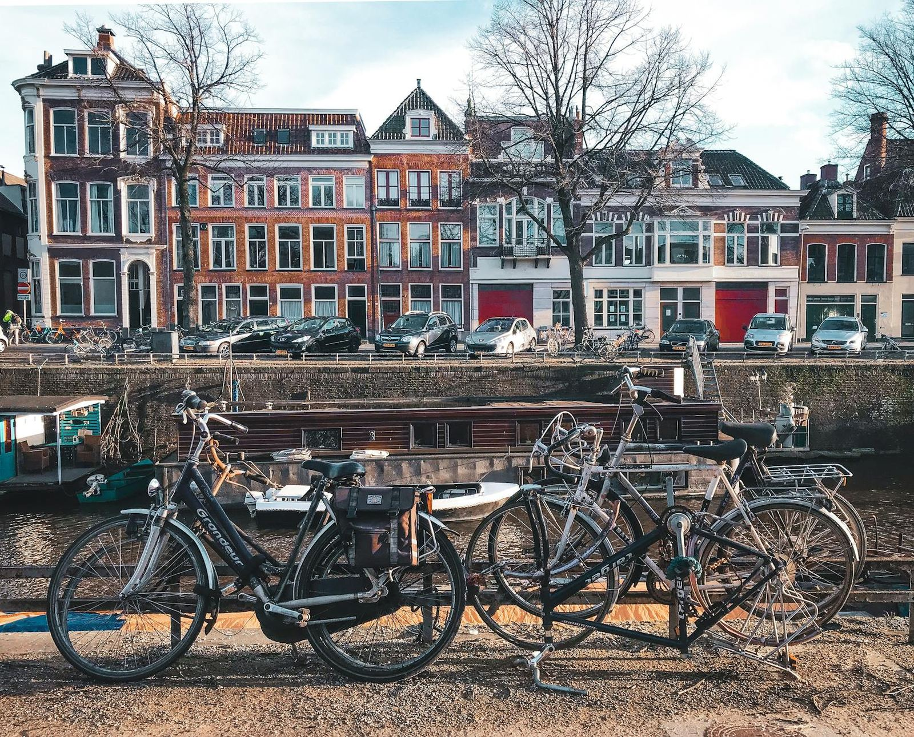
Italia e Paesi Bassi: arte, cultura e dialogo oltre i confini
🌐 Italy and the Netherlands promote culture through shared projects and artistic exchange. 🎯 Obiettivi didattici Comprendere testi informativi su…
7 ottobre 2024
Le 100 torri di Bologna
Bologna, "la turrita", è famosa per le sue torri medievali e la sua ricca storia architettonica. Bologna è famosa per le sue torri medievali, tanto…
20 agosto 2024
L'Evoluzione dell'Estate Italiana
L'estate italiana è cambiata con vacanze più corte, destinazioni varie e evoluzione socio-economica. L'estate italiana, un tempo caratterizzata da…
6 agosto 2024Langue e Parole, De Saussure
Ferdinand de Saussure's linguistic distinction between "langue" and "parole" crucial for effective Italian language teaching. 🇬🇧 Nel campo della…
18 luglio 2024
Vuotare il sacco
La frase "vuotare il sacco" significa esprimere completamente i pensieri o sentimenti senza trattenersi. La frase "vuotare il sacco" ha un…
4 luglio 2024
Visitare Venezia nel 2024
Discover the enchanting city of Venice! Learn about the new visitor ticket system effective in 2024, and explore top attractions like gondola rides,…
2 luglio 2024Il Carnevale di Venezia
Welcome to a fascinating journey through the history of the Venice Carnival, an event that not only enchants with its visual splendor but also…
25 giugno 2024
Mai una gioia
“Mai una gioia” è una frase molto popolare sul web e nella nostra vita quotidiana, specialmente nel 2020. Ma perché si dice così? Cosa significa…
20 giugno 2024Il Collio per GO!2025: quando la cultura unisce i confini
🌍 Collio’s cultural projects bring new life to the Italy-Slovenia border for GO!2025. 🎯 Obiettivi didattici Comprendere un testo su eventi culturali…
18 giugno 2024Bella ciao
Explore the enduring legacy of 'Bella Ciao,' Italy's iconic anthem of resistance. Learn about its mysterious origins, evolution, and global…
18 giugno 2024Aperitivo a Roma, Milano e Napoli
Discover the vibrant tradition of aperitivo in Italy, exploring the unique happy hour experiences in Rome, Milan, and Naples. Learn about this…
11 giugno 2024
Essere a cavallo
"Essere a cavallo" è un modo di dire italiano che viene utilizzato per indicare che ci si trova in una situazione sicura e confortevole, superando…
6 giugno 2024La Gestualità Italiana: Un Linguaggio Senza Parole?
La lingua italiana include i gesti come forma di comunicazione con significati e origini diverse. La lingua italiana non è fatta soltanto di parole…
4 giugno 2024Il Clima Italiano: Sole, Mare e Montagne
Italy has various climates: alpine, continental, Mediterranean, temperate. Summer is hot, winter is cold. Se stai pianificando un viaggio in Italia o…
28 maggio 2024Il gioco non vale la candela
Cosa significa “il gioco non vale la candela”? Significa che un’attività o una situazione non giustifica lo sforzo richiesto. Questa espressione si…
25 maggio 2024Le funzioni del linguaggio
Human language is complex, serving varied functions: referential, emotive, conative, phatic, metalinguistic, and poetic. 🇬🇧 Il linguaggio umano è una…
23 maggio 2024Il Rinascimento Italiano
The Italian Renaissance transformed art, culture, and science, shaping the modern world. Benvenuti a una panoramica accattivante sul Rinascimento…
21 maggio 2024La festa della mamma
Explore the history and traditions behind Mother's Day, from its ancient origins honoring fertility goddesses to modern celebrations worldwide.…
14 maggio 2024Italian Private Classes: Discover the Advantages of Personalized Learning
Italian private classes offer personalized, flexible, and accelerated learning with immediate feedback and a private environment. Learning a new…
12 maggio 2024Private Italian Course: Exclusive, Tailored Education for Every Learner
Master Italian with personalized courses, tailored curriculum, and immersive cultural experience for fluency. Broaden your horizons. Are you ready to…
12 maggio 2024Arrampicarsi sugli specchi
Cosa significa “arrampicarsi sugli specchi”? Significa cercare di trovare una scusa o una giustificazione che non regge. Guarda su YouTube ↗ Questa…
11 maggio 2024Rita Levi Montalcini
Discover the extraordinary life of Rita Levi Montalcini, the only Italian woman to win a scientific Nobel Prize. Read her story of determination and…
7 maggio 2024
Learn the Italian Basics: A Beginner's Guide
Are you intrigued by the melodic language of Italian? Dive into the essentials of Italian language learning with our comprehensive guide. Why Learn…
5 maggio 2024
Chiudere un occhio
Cosa significa "chiudere un occhio"? Significa ignorare qualcosa di negativo per convenienza o favore. Guarda su YouTube ↗ Questo modo di dire si usa…
2 maggio 2024
Mamma mia!
Discover the origin and meaning behind the iconic Italian expression "Mamma Mia"! Explore why Italians use this phrase and its deep cultural…
30 aprile 2024
Can I Learn Italian in 3 Months?
Discover the strategies, resources, and tools to achieve conversational fluency in Italian within a quarter of a year. Explore structured learning…
28 aprile 2024
Cosa bolle in pentola?
Cosa significa “cosa bolle in pentola”? Significa voler sapere cosa sta succedendo o se ci sono novità. Questa espressione trae origine dalla cucina…
27 aprile 2024
Sanremo: Il festival della canzone italiana
Experience the magic of the Italian Song Festival in Sanremo. Discover talented artists competing for the prestigious Leone di Sanremo. Vivi la magia…
26 aprile 2024Il carnevale di Ivrea
Experience the vibrant Carnival of Ivrea in Piedmont, where neighborhoods compete in a spectacular "Battle of the Oranges." Clad in the traditional…
23 aprile 2024
Learn the Italian Basics: A Complete Guide
Learning Italian offers cultural, career, and international benefits, with accessible resources and global market opportunities. Why Learn Italian?…
21 aprile 2024
Staying Motivated
Discover the secrets to staying motivated in language learning with expert insights and practical tips. Learn how personalized goals, consistent…
21 aprile 2024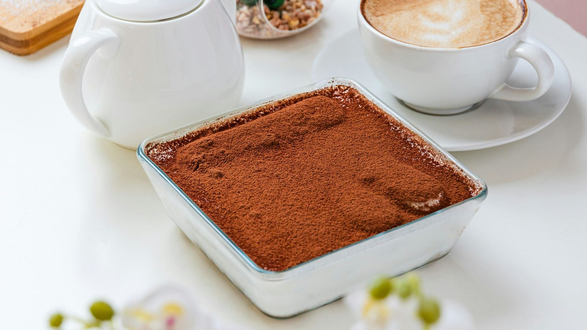
Scopri l'origine del Tiramisù
Discover the fascinating history of Tiramisu, the iconic Italian dessert from Treviso. Learn about its origins, original recipe, and delightful…
19 aprile 2024Le Teorie di Stephen D. Krashen
Stephen D. Krashen's language acquisition theories emphasize input, affect, and brain utilization in language learning. 🇬🇧 L'insegnamento delle…
18 aprile 2024
L'industria cinematografica italiana
Learn about the challenges facing the Italian film industry and the call for reforms to ensure its survival. Stay informed and support the future of…
16 aprile 2024
Learn Italian Quickly: Innovative Language Learning Hacks
Learning Italian requires embracing mistakes, immersing yourself in the language, and daily practice for fluency. Learning a new language like…
14 aprile 2024
10 Tips for Learning Italian
Unlock the secrets to mastering Italian with our Top 10 Tips for Learning Italian. From immersive experiences to effective study strategies, discover…
14 aprile 2024
Discovering the Italian Language: Beyond Just an App
Learning a new language opens up worlds of possibilities. While apps like Duolingo offer a convenient way to start, "Learn Italian from Home"…
13 aprile 2024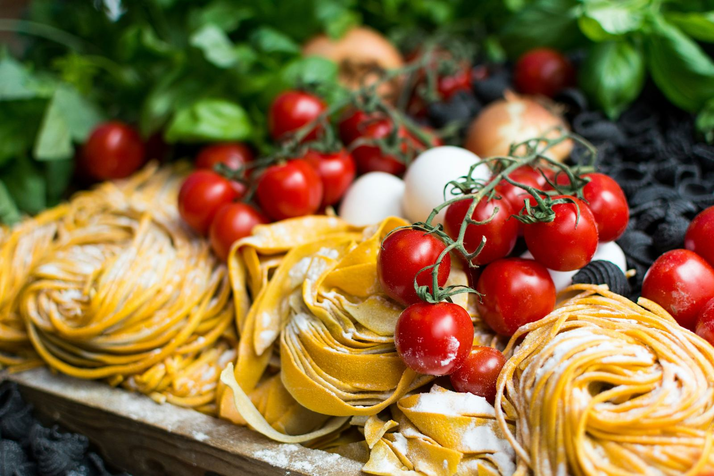
Perché il cibo italiano è tanto amato?
Discover the secrets of Italian cuisine and why it's loved worldwide. Explore regional traditions, ingredient quality, and the art of conviviality at…
12 aprile 2024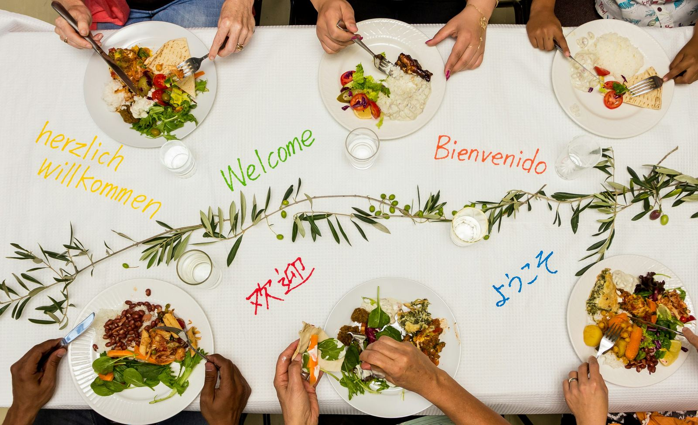
Sviluppo della Sensibilità Interculturale di Bennett
The article explores Bennett's six stages of intercultural sensitivity and provides practical strategies for teachers' implementation. 🇬🇧…
11 aprile 2024Italian motor week
Explore the exciting world of Italian motors during Italian Motor Week24, featuring events showcasing automotive heritage, from Vespa World Days to…
9 aprile 2024
The Secrets to Effective Language Learning
Embarking on a journey to master a new language can be an fun, but it often comes with its fair share of challenges. Fear not! With the right…
7 aprile 2024Tizio, Caio e Sempronio
Cosa significa “Tizio, Caio e Sempronio”? Significa riferirsi a tre persone generiche. Questa espressione si usa in italiano per indicare tre…
6 aprile 2024Il matrimonio italiano
Explore the rich traditions of Italian weddings. Discover customs, attire, and festivities that make Italian weddings unique. Esplora le ricche…
5 aprile 2024
Essere in alto mare
"Essere in alto mare" è come trovarsi in una barca senza remi, senza bussola e senza sapere dove si stia andando. È una situazione in cui ci si sente…
4 aprile 2024Viganella: il paese senza sole
Discover the village of Viganella in Piedmont, where the sun disappears for months during winter. A large mirror mounted on the mountain reflects…
2 aprile 2024
Easy Hacks for Mastering Italian Language
This series offers expert tips for mastering Italian, including cultural immersion, consistent practice, flashcards, and communities. Welcome to the…
1 aprile 2024
Creative Practice
Are you ready to embark on a linguistic journey through the beautiful language of Italian? Speaking Italian is not just about mastering grammar and…
31 marzo 2024Arte italiana: La Gioconda
Explore the timeless masterpiece of Leonardo da Vinci, La Gioconda (or Mona Lisa), and unravel the mysteries behind this iconic painting. Discover…
29 marzo 2024Università di Bologna: la più antica d'Europa
Explore the rich history of the University of Bologna, Europe's oldest university founded in 1088. Discover its origins, evolution, and renowned…
26 marzo 2024Arte, giovani e intercultura per un’Italia futura
🌍 A cultural event connects new generations, migration and creativity through art. 🎯 Obiettivi didattici Comprendere un testo informativo su eventi…
25 marzo 2024
Avoiding Common Mistakes
Embarking on the journey of learning Italian can be an enriching experience, but it comes with its share of challenges. Understanding and avoiding…
24 marzo 2024
Fare i conti senza l’oste
Cosa significa “fare i conti senza l’oste”? Significa trarre conclusioni affrettate senza considerare tutti i fatti o le persone coinvolte. Questa…
23 marzo 2024
La nuova famiglia italiana
Discover the evolution of the Italian family over the past 30 years! From tradition to modernity, explore the changes in family dynamics, work-life…
22 marzo 2024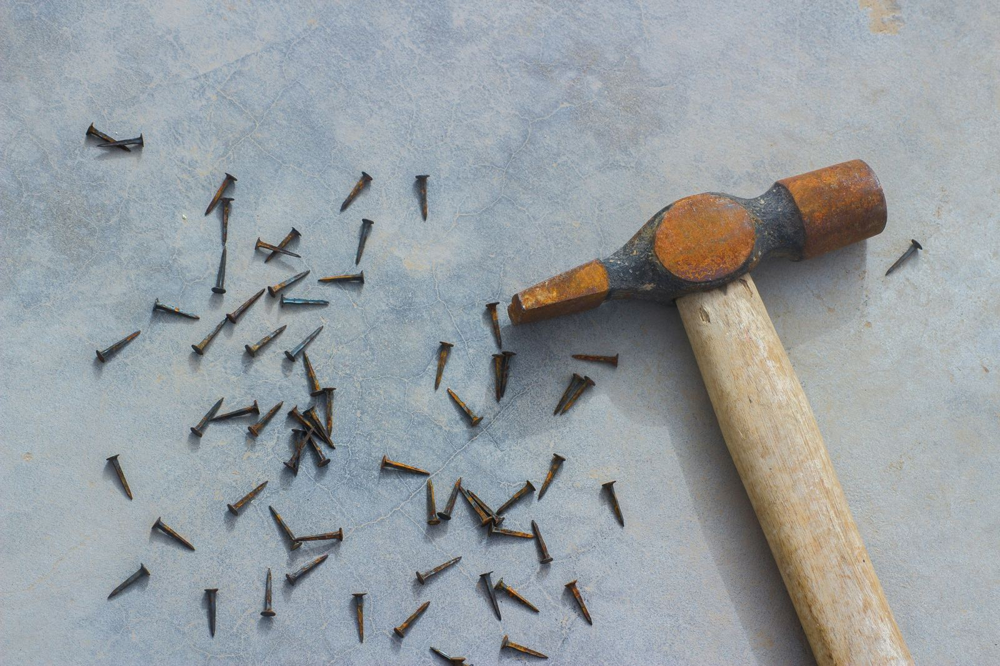
Chiodo scaccia chiodo
Cosa significa “chiodo scaccia chiodo”? Significa superare un problema o una delusione sostituendolo con qualcosa di nuovo e positivo. Questo modo di…
21 marzo 2024Leer Italiaans in Amsterdam of Online: 5 Redenen Waarom Privélessen Werken
Wil je snel Italiaans leren, maar weet je niet welke methode het beste werkt? Ontdek hoe privélessen je vooruitgang versnellen, zowel online als in…
20 marzo 2024
La pasta italiana
Discover the rich variety of Italian pasta types and their regional traditions. From classic spaghetti to unique shapes like orecchiette and…
19 marzo 2024
How difficult is to learn Italian?
Learning a new language can feel daunting, but the perceived difficulty varies greatly depending on individual factors such as one's native language…
17 marzo 2024Mangia, Prega, Ama: tra Italia, India e Indonesia
Discover the enchanting world of "Eat Pray Love" filming locations with Julia Roberts. Explore Italy, India, and Indonesia through the eyes of…
15 marzo 2024La grammatica universale di Chomsky
Noam Chomsky's theory posits shared innate grammatical principles across languages. 🇬🇧 La grammatica universale è una teoria linguistica proposta da…
14 marzo 2024Tiramisù World Cup
Indulge in the world's best tiramisù at the Tiramisù World Cup! Join an unique competition celebrating the finest homemade tiramisù recipes from…
12 marzo 2024
The Power of Mime, Expressions, and Gestures
Vocabulary acquisition is a cornerstone of language learning, yet it's often overlooked in favor of grammar instruction. However, recent research…
10 marzo 2024
Italian Study Advices for All Levels
Embark on a tailored Italian journey with an experienced tutor for immersive, effective learning experiences. Learning a new language can be an…
10 marzo 2024
Duolingo vs. Individual Classes
Explore the advantages of 'Learn Italian from Home' over Duolingo and individual classes. Discover a personalized, culturally immersive Italian…
9 marzo 2024I passatempi degli italiani
Discover popular Italian pastimes and leisure activities. From gardening and DIY to sports and cultural pursuits, explore how Italians spend their…
8 marzo 2024
Saltare nel buio
Se hai sentito parlare di "fare un salto nel buio" ma non sai bene cosa voglia dire, tranquillo! Qui ti spiegheremo tutto. Questo modo di dire si usa…
7 marzo 2024La Dolce Vita
Explore the charm of Italian "Dolce Vita" through Fellini's iconic film. Be inspired by the luxury and fun of the 1950s. Scopri il fascino della…
5 marzo 2024
Learn Italian from Home: Choosing the Right Online Teacher
Learn Italian online for work or personal enrichment with the perfect teacher – native or bilingual. Are you ready to dive into the beautiful…
3 marzo 2024
Learning Italian is hard? Try this!
Learning Italian offers cultural insight, career opportunities, and enhances global communication and understanding for learners. Why Learn Italian?…
3 marzo 2024Italian Private Classes vs. Group Classes: Pros and Cons
Learning Italian: Private vs. Group Classes - personalized, flexible, immediate feedback for rapid progression; costly, less interaction. Learning…
3 marzo 2024
Focused Language Learning
Are you mesmerized by the melodic tones of Italian, dreaming of effortlessly conversing in the language of love? Learning Italian may seem like a…
3 marzo 2024
Italian Language Learning Shortcuts
The Italian language mastery tips focus on thinking in Italian, using language resources, and native practice. In the first two parts of our series,…
2 marzo 2024
La moda italiana: un viaggio nell'eleganza
Explore the rich history and unique styles of Italian fashion. Discover iconic designers and the evolution of Italian fashion from the 20th century…
1 marzo 2024Il sistema politico italiano
Learn about the separation of powers, legislative, executive, and judicial branches, and the role of the President. Explore Italy's constitutional…
27 febbraio 2024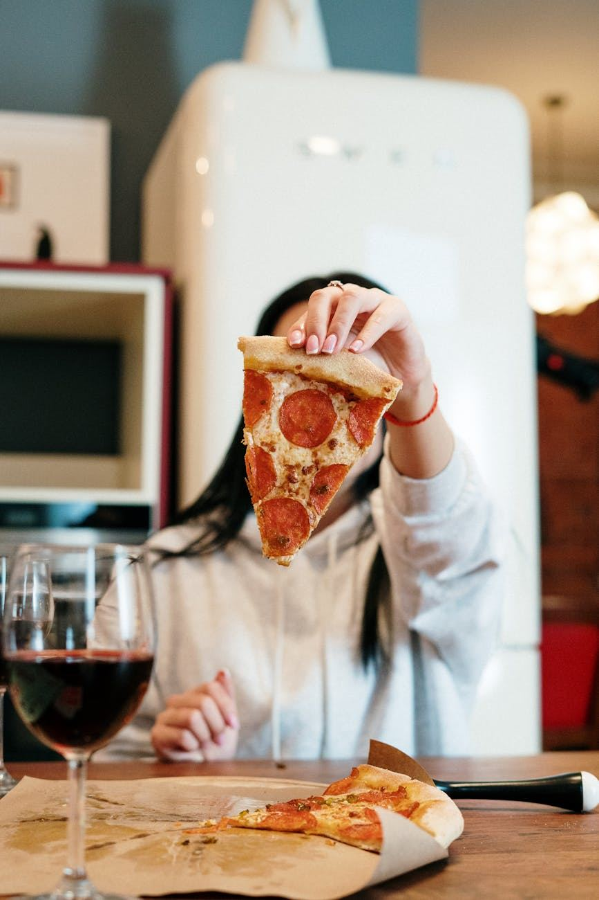
A tavola in Italia: cosa si fa (e cosa no)
🇮🇹 Table manners in Italy: 10 strange habits and what they say about culture. 🎯 Obiettivi didattici Leggere e comprendere un testo umoristico e…
25 febbraio 2024
7 Essential Tips for Progressing
Whether you're a beginner setting out on your linguistic exploration or an advanced learner seeking to refine your skills, these strategies will…
25 febbraio 2024Pagare alla romana
Cosa significa “pagare alla romana”? Significa dividere equamente il conto tra tutti i partecipanti. Guarda su YouTube ↗ Questo modo di dire si usa…
24 febbraio 2024Il patrimonio culturale dell'Italia
Discover Italy's rich cultural and natural heritage recognized by UNESCO. Explore 58 world heritage sites, from the stunning Amalfi Coast to the…
23 febbraio 2024La Varietà Linguistica
The Italian language's rich history dates back to Latin, evolving into diverse varieties. 🇬🇧 La lingua italiana ha una storia affascinante che risale…
22 febbraio 2024
Quanto è importante il calcio italiano?
Explore the impact of Italian football on the economy and recent changes in sports policy. Learn about the Serie A clubs and the financial…
20 febbraio 2024
Cultural influences in Language Learning
Drawing from recent research findings and academic insights, we delve into the nuanced interplay between language acquisition, cultural influences,…
18 febbraio 2024
Dove vanno gli italiani in vacanza?
Explore Italian holiday trends: seaside escapes reign supreme, with Tuscany as the top destination. Dive into the Istat report on Italian travel…
16 febbraio 2024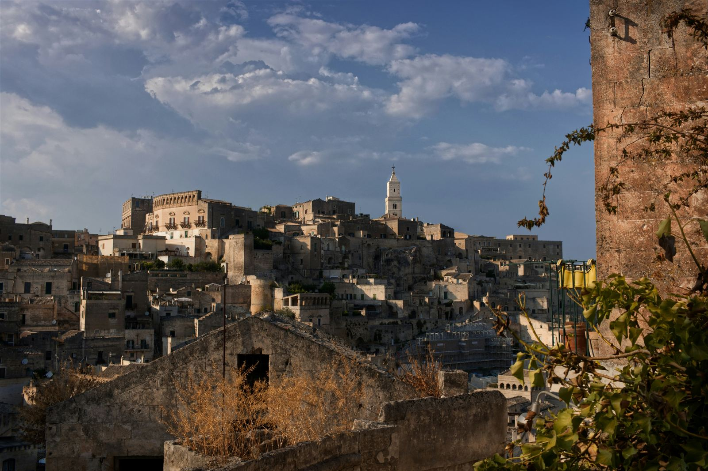
La Capitale della Cultura
Explore the charm of Italy's Culture Capital and its meaning. Dive into a year-long celebration of art, heritage, and creativity. Esplora il fascino…
13 febbraio 2024
Gestalt Language Learning Theory
In the colorful tapestry of human communication, language serves as the thread that weaves together cultures, ideas, and experiences. Learning a new…
11 febbraio 2024
Learn Italian Strategies for Busy Professionals
Learn Italian from Home offers flexible, task-based Italian courses tailored for busy professionals' schedules. In today's fast-paced world, finding…
10 febbraio 2024
Il boom dell'italiano: la quarta lingua più studiata al mondo!
Discover how Italian surpassed French to become the world's fourth most studied language! Explore language trends and Italian culture in this article…
9 febbraio 2024
Moda sostenibile italiana
Explore sustainable Italian fashion - luxury meets eco-consciousness. Discover innovative fabrics and ethical practices from top Italian brands.…
6 febbraio 2024
How Long Does It Take to Learn Italian?
Learning Italian, like any new language, requires dedication, practice, and the right resources. Whether you're drawn to Italian for its rich…
4 febbraio 2024Esportazioni italiane
Discover the latest insights on Italian exports in 2023. Learn about the significant growth driven by sustainability and digitalisation. Scopri le…
2 febbraio 2024
Cadere dalle Nuvole
Vivere sulle nuvole porta libertà, creatività e distacco dalla realtà. "Cadere dalle nuvole" indica sorpresa inaspettata. Vivere sulle nuvole…
1 febbraio 2024Salutarsi col bacio
Learn about the etiquette of cheek kissing and its cultural variations worldwide. Discover when and how to greet with a kiss on the cheek, respecting…
30 gennaio 2024
Learning Italian Online for Free
Are you eager to immerse yourself in the beauty of the Italian language but unsure where to start? With the vast array of online resources available,…
28 gennaio 2024Mandare a quel paese
Cosa significa “ mandare a quel paese ”? Significa dire a qualcuno di andare via in modo brusco e spesso offensivo. Guarda su YouTube ↗ Questo modo…
27 gennaio 2024
Scrittori italiani famosi nel mondo
Discover the ranking of the most famous Italian writers in the world and explore their masterpieces. Esplora la classifica degli scrittori italiani…
26 gennaio 2024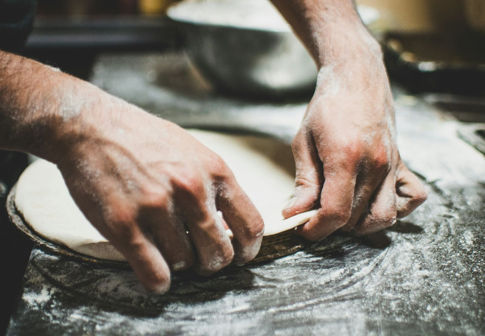
Pizza Romana & Napoletana
Discover the pizza preferences of Italians! Learn why Neapolitan and Roman pizzas are favourites, and how quality ingredients and traditional methods…
23 gennaio 2024
Your Guide to Learning Online
Are you eager to embark on a journey to master the beautiful language of Italian but hesitant about the costs involved? Fear not! With the abundance…
21 gennaio 2024
Learning Italian Like a Spy
Learn Italian like a spy by seeking immersive opportunities, engaging with natives, and exposing yourself to authentic contexts. Imagine learning…
21 gennaio 2024
I gesti degli italiani
Discover the charm of Italian hand gestures! Learn about the rich cultural significance of Italian gestures and immerse yourself in the art of…
19 gennaio 2024
La Torre di Pisa
Discover the intriguing history of the Leaning Tower of Pisa, a renowned Italian landmark known for its unique tilt. Learn about its construction,…
16 gennaio 2024
Italian Classes Near Me
Are you considering delving into the beautiful language of Italian? Perhaps you've already started your journey but find yourself wondering how long…
14 gennaio 2024
Italian Cultural Immersion Tips in Individual Classes
Learn Italian for cultural immersion with personalized classes, embracing discomfort, active listening, and mnemonic devices. Learning Italian is an…
14 gennaio 2024
Italian Gestures: More Than Just Words
Italy is renowned for its breathtaking landscapes, delectable cuisine, and rich cultural heritage. One distinctive element of Italian culture that…
13 gennaio 2024
Il Padrino: un'impronta indelebile
Discover the iconic Godfather film series, a timeless masterpiece that delves into the complexities of mafia life and family dynamics. Explore the…
12 gennaio 2024La Moka
Discover the fascinating story of the Italian Moka, the iconic coffee maker that changed the world. Learn about its origins, innovation, and why it's…
9 gennaio 2024
Learning Italian: Tips and Tricks
Are you eager to embark on a journey to learn Italian but unsure where to start? Look no further! In today's digital age, there's a plethora of…
7 gennaio 2024I brand italiani
Discover top Italian brands and industry trends. Insights on reputation and consumer favourites. Scopri i brand italiani più rinomati, le tendenze…
5 gennaio 2024
Culo e Camicia
L'espressione "Culo e camicia" denota una stretta connessione basata sulla familiarità e la complicità umana. Perché si usa l'espressione "Culo e…
4 gennaio 2024Le Dolomiti
Discover the wonders of the Dolomites! Explore breathtaking landscapes, outdoor activities, and a rich Alpine culture. Le Dolomiti, meraviglie…
2 gennaio 2024
Fast Italian Language Skills
Learn Italian effectively with 5 tips: find similarities, study greetings, master verbs, pronounce well, list essential words. Learning Italian can…
1 gennaio 2024
Can You Learn Italian on Duolingo?
Discover the secrets of mastering Italian with Duolingo! Explore its gamified approach, interactive exercises, and cultural insights. Uncover whether…
31 dicembre 2023Cascare dal pero
Cosa significa “cascare dal pero”? Significa prendere atto di qualcosa del quale non si aveva idea, ma che in realtà era abbastanza scontato. Questo…
30 dicembre 2023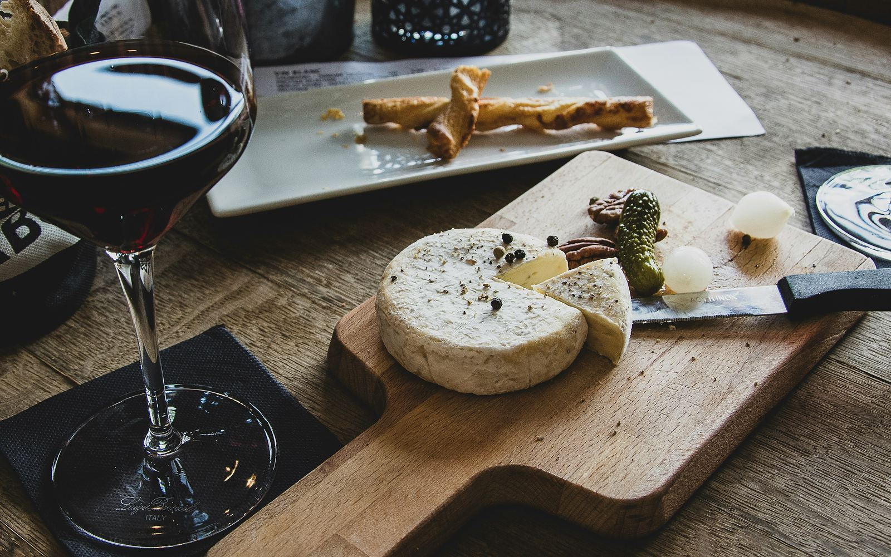
Aperitivo o Apericena?
Learn about the differences between Italian aperitivo and apericena! Discover the traditions and culinary delights of these social gatherings.…
29 dicembre 2023Il compleanno italiano
Explore the roots of birthday traditions! From cake to candles and party favors, understand why these practices make every birthday celebration a…
26 dicembre 2023
Can I Learn Italian in 1 Year?
Learning a new language can be an exciting yet daunting task, especially when considering the timeframe. For those embarking on the journey to learn…
24 dicembre 2023La cultura in Italia
Discover Italians' cultural trends and preferences. Explore how Italians engage with literature, cinema, museums, and more. Learn about changes over…
22 dicembre 2023Formale o informale?
Ready to dive into the world of Italian language and culture? Understanding Italian social norms, like formal vs. informal address, is key. Pronto a…
19 dicembre 2023
When Did Celebrities Learn Italian?
From De Niro to Di Caprio, the influence of Italian heritage on Hollywood is profound. While some celebrities wear their Italian origins proudly,…
17 dicembre 2023Pietro torna indietro
Cosa significa “Pietro torna indietro”? Significa che qualcosa che viene prestato deve essere restituito. Questa espressione, che grazie alla rima…
16 dicembre 2023Gli stereotipi sugli italiani
If you're curious to discover what's true behind the famous stereotypes about Italians, you're in the right place! Italy is famous for its delicious…
15 dicembre 2023I dialetti Italiani
The Italian dialects stem from Latin with distinct roles from standard Italian, influenced by regional languages. Il processo di evoluzione dei…
12 dicembre 2023Discover the Unique Approach to Learning Italian with Alessio
"Learn Italian from Home" offers personalized, interactive courses blending tradition and innovation for engaging, cultural learning. Embarking on…
10 dicembre 2023Stare con le mani in mano
Cosa significa “stare con le mani in mano”? Significa non fare nulla, essere inattivi mentre gli altri lavorano. Questo modo di dire si usa per…
7 dicembre 2023Maurizio Cattelan: tra arte e provocazione
Maurizio Cattelan, a bold artist known for controversial and influential works, challenges contemporary cultural conventions. Nato a Padova, Cattelan…
5 dicembre 2023Navigating Italian Language Learning: From Italy vs. Abroad
Learning Italian: emersion in Italy for natural growth or structured online classes from abroad offers benefits. Learning Italian can be a thrilling…
3 dicembre 2023
Interactive Learning Methods
In an increasingly interconnected world, learning a new language has become an ambitious goal for many. With the advent of technology, numerous…
2 dicembre 2023La Vespa
The Vespa, an Italian symbol of style and freedom, was born in the post-war period and continues to inspire today. La Vespa, simbolo italiano di…
28 novembre 2023
Mastering Italian Online with Alessio
"Learn Italian from Home" offers dynamic, interactive online courses fostering cultural connection and language proficiency. Learning Italian online…
26 novembre 2023Bastian contrario
Cosa significa “fare il Bastian contrario”? Significa opporsi sempre, per principio, a ciò che dicono o fanno gli altri. Questa espressione si usa…
25 novembre 2023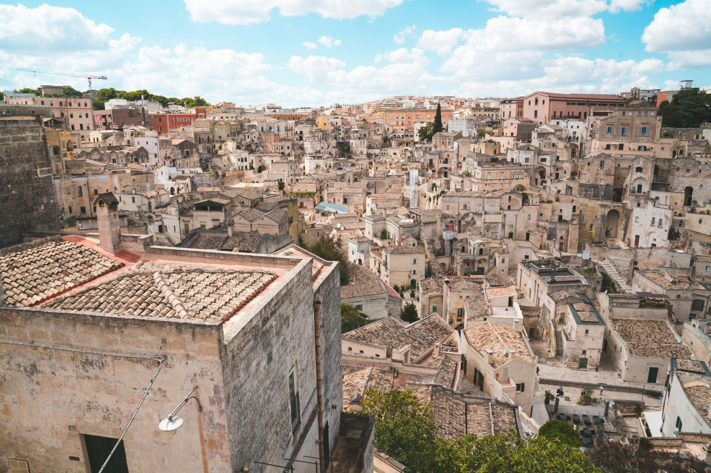
I Borghi Italiani
Italian villages offer a sustainable refuge, promoting quality of life and smart working. Oggi parliamo di come i borghi italiani stiano diventando…
21 novembre 2023Discover the Joy of Learning Italian Online with Me
"Learn Italian from Home" offers engaging, cultural Italian lessons in a personalized online setting. Are you ready to dive into the beautiful world…
19 novembre 2023Dante: Il Padre dell'Italiano
Dante Alighieri profoundly influenced the Italian language with the Divine Comedy, shaping modern Italian. Quando parliamo di Dante Alighieri, è…
14 novembre 2023Learn Italian Online with Confidence and, with Alessio!
"Learn Italian from Home" offers personalized, science-backed courses for an engaging language and culture journey. Hello future polyglots! Are you…
12 novembre 2023
How to Choose the Best Online Italian Course for Beginners
Learning Italian online has never been more engaging or effective, thanks to interactive classes using tools like Flippity and Wordwall. In this…
11 novembre 2023Firenze
Florence, city of the Renaissance art with churches, palaces, and museums, offers unique history, mystery, and charm. Firenze, città dell'arte…
7 novembre 2023
Boost Your Italian Learning: Strategic Tips for Faster Learning
Master a new language effectively: Change phone language, choose wisely, maintain consistency, focus on details, set goals. Mastering a new language…
5 novembre 2023
Practical Tips for Studying Italian
Study Italian with Alessio, a passionate, experienced teacher offering personalized classes and practical tips for immersive language learning.…
5 novembre 2023Learn Italian as a Kid with me!
"Learn Italian from Home" offers a fun, interactive Italian course for children, building strong language foundations. Hey, young explorers and…
5 novembre 2023La salute si cura insieme: prevenzione e incontri gratuiti ad Aci Bonaccorsi
🏥 In Sicily, a community campaign offers free health screenings and promotes prevention. 🎯 Obiettivi didattici Comprendere un testo su salute e…
4 novembre 2023Piove sul bagnato
Cosa significa "piove sul bagnato”? Significa che una situazione negativa peggiora o che chi ha già tanto, riceve ancora di più. Questo modo di dire…
2 novembre 2023Il Bar in Italia
Il bar italiano è un simbolo culturale e sociale con una lunga storia e diversi usi. Il bar italiano è un vero e proprio simbolo del nostro Paese, al…
31 ottobre 2023Master Italian for Business with Alessio
Learn Italian for business to unlock opportunities in Italian industries with tailored vocabulary and cultural understanding. Hello, professionals…
29 ottobre 2023
A mali estremi, estremi rimedi
Cosa significa “A mali estremi, estremi rimedi”? Significa che in situazioni difficili bisogna prendere misure drastiche. Questo proverbio si usa per…
28 ottobre 2023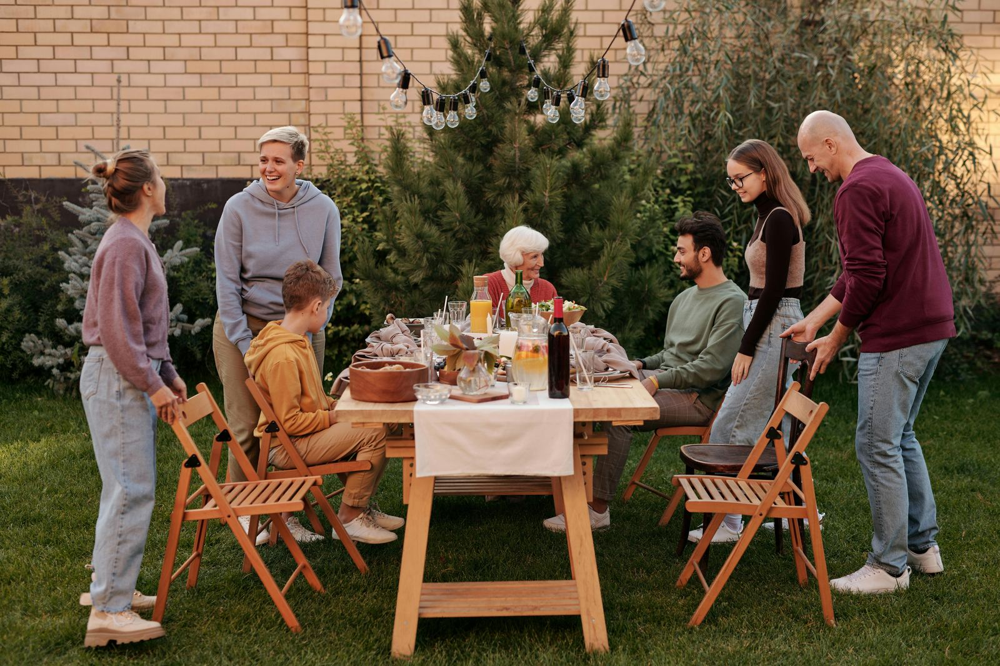
Apericena: un aperitivo che diventa cena
L'apericena è l'evoluzione informale dell'aperitivo torinese, unendo convivialità e praticità in stuzzichini e socializzazione. L'apericena è un…
24 ottobre 2023
Enhance Your Italian with Conversational Classes
The "Learn Italian from Home" course offers engaging, tailored conversational Italian classes for practical everyday communication. Hello language…
22 ottobre 2023L'Italia nello spazio
L'Italia ha avuto un ruolo fondamentale nell'esplorazione spaziale con scienziati pionieristici e missioni innovative. L'Italia ha una lunga e…
17 ottobre 2023Learn Italian Online with Alessio
Learn Italian from Home offers personalized Italian courses blending culture, speaking, and professional skills effectively. Hello, Hola, Ciao! If…
15 ottobre 2023
Recreating Real-Life Immersion
Are you on a quest to master the beautiful Italian language? Whether you're drawn to its melodious cadence, rich cultural heritage, or simply the…
14 ottobre 2023L'influenza dell'Impero Romano
L'Impero Romano ha lasciato un'impronta indelebile nella cultura, lingua, leggi e tecnologia moderne. L’Impero Romano, con oltre mille anni di…
10 ottobre 2023The Power of One-on-One Italian Learning
"Learn Italian from Home" offers personalized Italian courses emphasizing one-on-one learning, catering to individual needs and goals. At "Learn…
8 ottobre 2023Acqua in bocca
Cosa significa “acqua in bocca”? Significa mantenere un segreto e non rivelare informazioni riservate. Questo modo di dire si usa quando si vuole…
5 ottobre 2023Giuseppe Garibaldi: L'eroe dei due mondi
Giuseppe Garibaldi, rivoluzionario italiano noto per la sua vita avventurosa. Giuseppe Garibaldi, nato a Nizza il 4 luglio 1807 e morto a Caprera il…
3 ottobre 2023Waarom Privé en Kleine Groepslessen de Beste Manier Zijn om Italiaans te Leren in Nederlands
Het leren van Italiaans kan op verschillende manieren, maar privélessen en kleine groepslessen bieden unieke voordelen die andere vormen van…
2 ottobre 2023Tailored Italian Courses and Innovative Methodology
"Learn Italian from Home" offers diverse Italian classes with a unique methodology for effective and enjoyable language learning. Are you ready to…
1 ottobre 2023Expertly Crafted Italian Courses with Alessio
"Learn Italian from Home" offers expertly designed, academically informed Italian classes tailored to diverse learner needs. Dive into the rich…
24 settembre 2023
Mandare in fumo
Cosa significa “mandare in fumo”? Significa distruggere qualcosa, un progetto o un’idea. Questo modo di dire si usa quando qualcosa viene rovinato o…
23 settembre 2023
Online Italian Courses With Alessio
Learn Italian from Home offers advanced Italian courses, combining academic rigor with practical teaching methods for effective learning. Ciao, ciao,…
17 settembre 2023Elevate Your Italian Learning with Expert-Led Online Courses
"Learn Italian from Home" offers comprehensive, effective Italian courses tailored to all proficiency levels. Hello there, At "Learn Italian from…
10 settembre 2023
Accelerate Your Italian Learning: Effective Techniques
"Learn Italian from Home" offers personalized, effective Italian courses for all levels, ensuring rapid Italian proficiency. Mastering Italian…
9 settembre 2023È il mio cavallo di battaglia
Cosa significa “È il mio cavallo di battaglia”? Significa un punto di forza, una competenza o abilità particolarmente sviluppata e vincente. Questo…
7 settembre 2023
Mastering Italian Gestures with Italian Classes
Learn Italian from Home offers a course on Italian gestures, incorporating culture, history, and interactive learning. Hey there, At "Learn Italian…
3 settembre 2023Enhance Your Italian with Our Expert-Led Online Courses
"Learn Italian from Home" offers advanced, interactive Italian courses tailored for all levels, emphasizing practicality and engagement. At "Learn…
27 agosto 2023
Come la pandemia ha cambiato gli italiani
🌍 The pandemic transformed Italian habits: greener choices, more digital life. 🎯 Obiettivi didattic i Imparare a descrivere cambiamenti nelle…
25 agosto 2023Discover Personalized Italian Language Courses
Our Italian courses offer personalized, engaging learning experiences, catering to all proficiency levels and goals. Embark on a personalized Italian…
20 agosto 2023Personalized Italian Language Learning: Customized Courses for All Levels
Personalized Italian courses with tailored learning, dynamic methods, cultural immersion, and supportive community for all levels. Are you ready to…
13 agosto 2023
Learn Italian for holiday
Prepare for your Italian adventure with essential phrases, cultural insights, and fast-track learning methods. Are you gearing up for an…
12 agosto 2023
Top Tips to Study and Learn Italian Quickly
Improve Italian fluency: talk to native speakers, visit Italy, listen to podcasts, read, write, study. In today's fast-paced world, staying…
6 agosto 2023Custom Italian Courses Designed for Effective Learning
Custom Italian courses cater to individual needs and goals, offering innovative methods and cultural immersion for effective learning. Dive deep into…
6 agosto 2023Master Italian with Tailored Language Courses
Learn Italian with us for a personalized, culturally immersive experience that embraces language, history, and traditions. Welcome to the gateway of…
30 luglio 2023
Engaging, Personalized Italian Language Courses
Our Italian courses offer real-life materials, tailored Italian learning, cultural immersion, and flexibility for a vibrant language experience. Are…
23 luglio 2023
Unlocking Italian Fluency: Custom Courses for You
Alessio offers personalized Italian classes tailored to individual learning styles for mastering Italian. Welcome to a transformative learning…
16 luglio 2023Speak Italian Like a Local with Alessio
Dedicated Italian teacher with specialized education designs enjoyable, effective Italian courses for all proficiency levels and goals. Ciao! I'm…
9 luglio 2023
Enhance Your Italian Learning: Effective Strategies
Learning a new language can open doors to opportunities, connect with cultures, and expand horizons. Learning a new language opens doors to a world…
9 luglio 2023
The Effectiveness of Learning with a Private Tutor
Private tutoring provides personalized learning, immediate feedback, and confidence building, enhancing language education for students. In the realm…
8 luglio 2023Learn Italian for Daily Use
Italian language teacher with extensive academic background offers personalized, immersive Italian courses for mastering Italian in everyday…
2 luglio 2023
Is Italian Difficult to Learn? No!
Learning Italian involves embracing culture. Expert tutor offers tailored classes and immersive experiences for fluency. Learning Italian is more…
2 luglio 2023Italian Classes Near You and Online
Learn Italian from local classes or online courses with personalized, expert guidance and flexible scheduling options. Ciao! Are you on a quest to…
25 giugno 2023Navigating Italian Learning Courses
Learn Italian conveniently online with tailored Italian classes offering interactive, engaging curricula and experienced educators for effective…
18 giugno 2023Learning Italian Online for Business with Alessio
Our tailored Italian for business program equips professionals with essential language skills for career success. Are you looking to expand your…
11 giugno 2023
Master Italian Quickly: Language Learning Hacks
Learn Italian efficiently using language learning hacks and tailored online courses from "Learn Italian from Home". Learning a new language can be a…
10 giugno 2023Immerse Yourself in Italian Culture with Customized Language Classes
Our Italian program offers personalized courses tailored to your goals, interests, and proficiency level. Welcome to our Italian learning program,…
4 giugno 2023Embrace the Richness of Italian Culture
Learn Italian from Home offers flexible self-study resources for mastering Italian culture and language. Welcome to your flexible path to speaking…
28 maggio 2023Comprare casa in Italia da straniero
🧾 How to buy a house in Italy as a foreigner: rights, risks and legal tips. 🎯 Obiettivi didattici Comprendere testi normativi e informativi…
25 maggio 2023Learn Italian with Our Self-Study Materials
Self-study Italian materials use the UdA framework for engaging, comprehensive learning, covering culture, language, and more. Our self-study…
21 maggio 2023Discover Our Customized Italian Courses
Tailored Italian courses for all levels, showcasing language, culture, and real-life applications for comprehensive learning. Welcome to our…
14 maggio 2023Italian Classes from Home
Learn Italian from Home offers self-directed resources for learning Italian language and culture conveniently and comprehensively. Welcome to Your…
7 maggio 2023Customized Italian Courses
Alessio is an Italian teacher and he offers personalized Italian courses, from beginner to professional levels, combining language, culture, and…
30 aprile 2023Learning Italian: Courses and Tips for Every Learner
Learning Italian offers a fulfilling journey with tailored courses and effective strategies for learners of all levels. Learning a new language can…
23 aprile 2023Learn Italian: Comprehensive Guide to Fast and Effective Learning
Learning Italian offers rich cultural exploration, communication skills, and various courses and apps for effective learning. Learning a new language…
16 aprile 2023Transform Your Italian Learning Experience
Italian teacher, trained at Università Ca’ Foscari Venezia, offers innovative, multicultural language courses with real-world applications. As an…
9 aprile 2023
Mastering the Italian Language
Learn Italian with Università Ca’ Foscari Venezia methodology (UdA) for cultural immersion and practical skills. Learning the Italian language is a…
2 aprile 2023Explore Personalized Online Italian Classes Tailored to You
We offer tailored online courses for all levels, providing effective and enjoyable learning. Are you interested in learning Italian but unsure where…
26 marzo 2023Italian for Travel: Your Ultimate Guide
Prepare for Italy trip with our Italian for Travel course - essential phrases, situational practice, cultural tips. Learn Italian for Your Next…
19 marzo 2023Enhance Your Italian Listening Skills
Improve Italian listening with native speaker audio, varied accents, comprehension exercises, and interactive methods. Enhance skills now! Ciao…
12 marzo 2023Personalized Italian Classes Tailored Just for You
Tailored Italian lessons cater to your needs with customized curriculum, one-on-one sessions, and flexible scheduling. Customized Italian Lessons to…
5 marzo 2023Dive into Interactive Italian Learning
Learn Italian interactively! Enjoy role-playing, multimedia resources, personalized approach, and immersive experiences. Fun and effective learning!…
26 febbraio 2023Aprile, mese di pioggia e speranza
🌱 April in Italy is full of changes, weather sayings and popular rituals. 🎯 Obiettivi didattici Comprendere testi descrittivi e culturali con…
25 febbraio 2023Master Italian Pronunciation with Expert Guidance
Learn to speak Italian like a native with our specialized course, featuring phonetics, native speaker audio, and more. Ciao a tutti! Pronunciation is…
19 febbraio 2023
Italian Culture Courses
Immerse in Italian culture with our language and cultural courses. Explore history, cuisine, festivals, and more. Discover the Rich Tapestry of…
12 febbraio 2023Private Italian Classes: Unlock Your Italian Language Potential with a Personalized Approach
Private Italian classes offer personalized, flexible learning with authentic materials and a dedicated instructor for fluency. Are you looking to…
5 febbraio 2023
Learn Italian Fast for Beginners
In our Italian learning series, advanced techniques include tailored vocabulary, frequent speaking, and embracing mistakes. Welcome back to our…
1 febbraio 2023Private Italian Lessons: Master the Language with Customized One-on-One Instruction
Private Italian lessons offer personalized, dynamic learning with flexible scheduling for accelerated fluency. ìLooking to fast-track your Italian…
29 gennaio 2023Italian Courses for Kids: Play, Learn, and Grow with Tailored Italian Lessons
Italian courses for kids blend play and education to build bilingual brains, fostering love for learning. Learning a new language is an exciting…
22 gennaio 2023
Italian for Specific Professions: Tailored Courses for Healthcare, Law, and Hospitality and more
Professionals in healthcare, law, and hospitality can benefit from specialized Italian courses for better professional communication. Navigating the…
22 gennaio 2023Italian Language Immersion: Dive Deep with Online Italian Lessons
Immerse in Italian for rapid fluency through online or in-person programs tailored to your level. Immersing yourself in the Italian language can be a…
15 gennaio 2023
Achieving Italian Language Certification: Personalized Lessons
Personalized Italian classes prepare learners for certification, focusing on individual needs and exam preparation strategies. Achieving…
8 gennaio 2023Veelgestelde vragen over Italiaans leren in Amsterdam en online
Waarom kiezen voor privélessen Italiaans? Privélessen zijn volledig afgestemd op jouw niveau, tempo en doelen. Je krijgt maximale spreektijd, directe…
10 ottobre 2022
In bocca al lupo
La frase “in bocca al lupo” è un augurio comune in italiano che si usa per augurare buona fortuna, specialmente in situazioni di difficoltà o…
8 aprile 2021